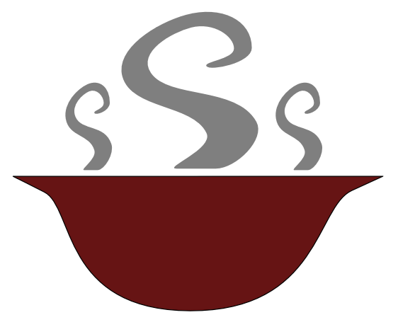

<ion-header>
  <ion-navbar color="primary">
    <button ion-button icon-only menuToggle>
      <ion-icon name="menu"></ion-icon>
    </button>
    <ion-buttons end>
      <button (click)="salir()" ion-button icon-end>
        Salir
      </button>
    </ion-buttons>

    <ion-title>
      Conexiones
    </ion-title>

  </ion-navbar>
</ion-header>

<ion-content class="fondo">
  <ion-grid [ngClass]="{'normal':!deslizar,'cabeceramenu':deslizar}">
    <ion-row style="height: 100%;">
      <ion-col>
        <label style=" color: #ffe5e5;
          font-size: larger;
          /* font-family: -webkit-body; */
          /* font-stretch: unset; */
          font-weight: lighter;
          font: icon;
          font-weight: bold;
          position: absolute;
    bottom: 20px;">Conexión Wifi</label>
      </ion-col>
    </ion-row>
  </ion-grid>
  <h3 style="text-align: center;
  margin-top: -25px;
  border-top-left-radius: 60px;
  border-top-right-radius: 60px;
  background: white;
height: 30px;"></h3>
  <ion-list>
    <ion-item>
      <ion-avatar item-start>
        
      </ion-avatar>
      <ion-label stacked>Impresora Caja</ion-label>
      <ion-input #caja type="text" [value]="objWifi.ipcajero" placeholder="Impresora caja"></ion-input>
    </ion-item>
    <ion-item>
      <ion-avatar item-start>
        
      </ion-avatar>
      <ion-label stacked>Impresora cocina</ion-label>
      <ion-input #cocina type="text" [value]="objWifi.ipCocinaCaliente" placeholder="Impresora cocina"></ion-input>
    </ion-item>
    <ion-item>
      <ion-avatar item-start>
        
      </ion-avatar>
      <ion-label stacked>Impresora cocina fria</ion-label>
      <ion-input #cocinafria type="text" [value]="objWifi.ipCocinaFria" placeholder="Impresora cocina caliente"></ion-input>
    </ion-item>
    <ion-item>
      <ion-avatar item-start>
        
      </ion-avatar>
      <ion-label stacked>Impresora barra</ion-label>
      <ion-input #barra type="text" [value]="objWifi.ipBarra" placeholder="Impresora barra"></ion-input>
    </ion-item>
  </ion-list>
</ion-content>

<ion-footer>
  <ion-toolbar color="gris" style="text-align: center">
    <button (click)="guardarCambios(caja.value,cocina.value,cocinafria.value,barra.value);" ion-button icon-only color="light" style="width: 80%;">
      Guardar
    </button>
  </ion-toolbar>
</ion-footer>